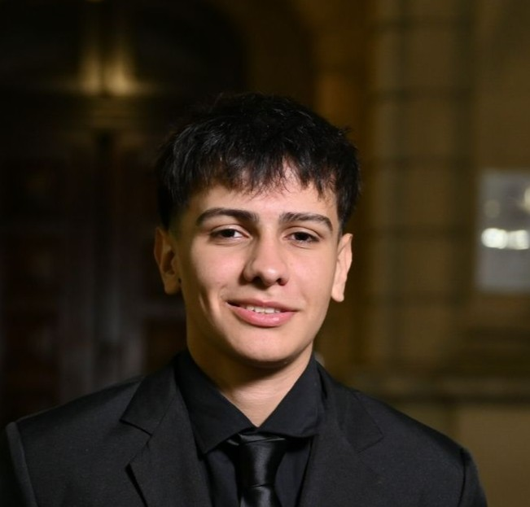

Sobre Mí

Hola, tengo 18 años y soy estudiante de Programación Full Stack. Me apasiona el mundo del desarrollo web y la tecnología, y estoy enfocado en aprender y mejorar día a día para convertirme en un profesional capaz de crear aplicaciones eficientes y modernas.
Me gusta combinar creatividad con lógica para resolver problemas y desarrollar soluciones que aporten valor. Actualmente, estoy adquiriendo conocimientos sólidos en tecnologías como HTML, CSS, JavaScript, y frameworks modernos para construir sitios y aplicaciones dinámicas.
Estoy abierto a nuevos desafíos, colaboraciones y proyectos que me permitan crecer y seguir aprendiendo en este apasionante campo.